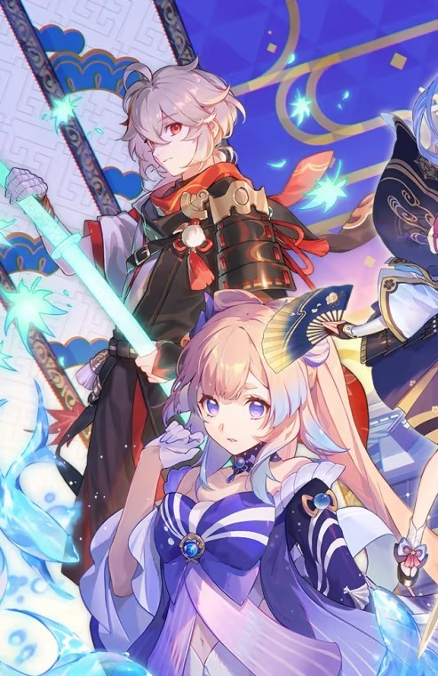
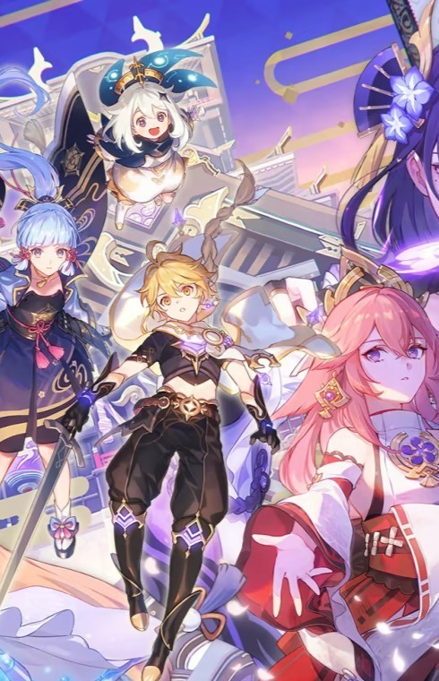

Genshin impact es un juego RPG de mundo abierto que brinda una experiencia audio-visual unica. Este trata de
dos gemelos
los cuales son separados por una misteriosa entidad que se cruza en su camino, la cual, se lleva consigo
a uno de los
hermanos dejando al otro solo. El juego empieza cuando aparecemos en una playa en la cuál pescamos
a nuestra compañera de
viaje; Paimon, la cuál nos guiará en nuestra aventura por el mundo de teyvat.
Este mundo se divide en actualmente en 4 naciones las cuales son; Mondstat, Liyue,
Inazuma y Sumeru.
Si deseeas descargar el juego, pulsa en la foto para ir al sitio de descarga oficial para instalarlo;
A lo largo de esta página web encontrarás mucha mas información acerca del juego y mecanicas "ingame".
En las pestañas de arriba podrás ver los distintos apartados de esta pagina. Una vez dicho esto, que
empieze tu viaje a través de la pagina web. Te recuerdo que si te animas a jugarlo puedes clicar el logo
situado en la parte superior izquierda para volver a la pagina principal y poder ir a la página de descarga.
{kind=link}
{kind=link}
{kind=link}
{kind=link}
